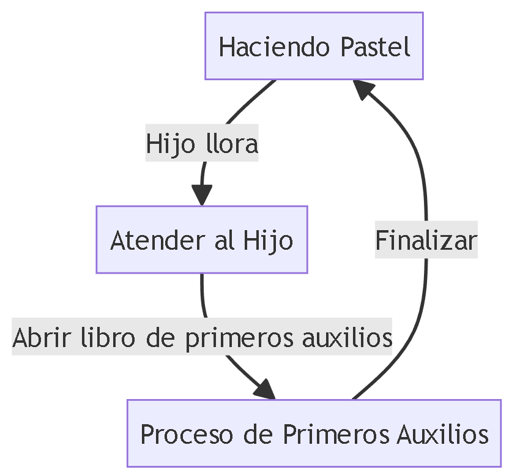

1. Todo acerca de programa
Programa
De forma resumida, un programa es una actividad del sistema y se puede identificar como «tarea «.
Dentro de un sistema operativo, podemos ejecutar varios programas, los cuales funcionan de forma independiente.
El sistema facilitará las virtudes del equipo para cada programa: gestión de memoria, uso del procesador, etc.
Un programa es una entidad pasiva: un archivo que contiene un grupo de instrucciones para que éste se ejecute.
Como no realiza ninguna acción por sí mismo y tiene que ser ejecutado para realizar las acciones que contiene,
se le denomina entidad pasiva. El espacio de direcciones de un programa está compuesto de una instrucción, datos y un stack.
Al fin y al cabo, un programa en ejecución no es lo mismo que un programa. Podemos utilizar el símil de: no es lo mismo
una mesa que unas instrucciones para hacer la mesa. El programa es un conjunto de datos sin más, no es algo dinámico que esté
continuamente trabajando.
2. Todo acerca de proceso
Proceso
Es la ejecución de un programa y se considera una entidad activa porque realiza las acciones espeficadas en ese programa.
De este modo, podemos ver varios procesos provenientes de un mismo programa (como es el caso de Google Chrome). El proceso
maneja las actividades del sistema operativo a través del PCB (Process Control Block). Un proceso necesita de ciertos
recursos: memoria, procesador, recurso I/O, etc.
Los programas se ejecutan, pero nunca vuelven ¿Qué quiere decir eso? Pues que, el proceso acaba cuando se desea, existe
un error o un conflicto. El programa no es que termine, sino que el que termina es el proceso del programa.

3. Tabla de procesos y programas
Diferencias
Las principales diferencias entre un programa y un proceso son:
| Número | Proceso | Programa |
|---|---|---|
| 1 | Un proceso es una instancia en ejecución de un programa. | Un programa es un conjunto de instrucciones almacenadas en un archivo. |
| 2 | Los procesos consumen recursos del sistema mientras se ejecutan. | Los programas son estáticos y no consumen recursos hasta que se ejecutan. |
| 3 | El proceso es dinámico, implica la ejecución real de esas instrucciones. | El programa es estático, es solo un conjunto de instrucciones. |
| 4 | Los procesos están en ejecución en la memoria. | Los programas pueden estar en reposo en el disco. |
4. Ejemplo con procesos-programa-prioridad
Ejercicios didactivos de procesos con programas y su prioridad que puedes realizar para entender mejor el trasfondo de esto:
Procesos - Programa - Prioridad
Si al estar haciendo el pastel , llega su hijo llorando por que le picó una abeja, el cocinero deja de hacer el pastel y abre un libro de primeros auxilios, en este momento pasó a un proceso de mayor prioridad, cuando termine volverá y continuará con el anterior proceso.
